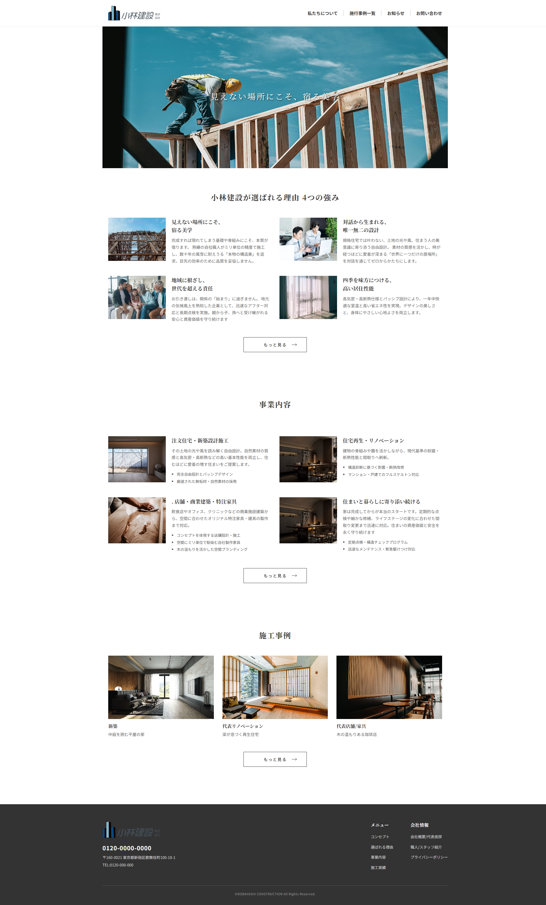

小林建設 コーポレートサイト（自主制作）
Web制作の学習を始めて最初に制作したWebサイトです。HTMLとCSSの基礎を学びながら、構成・ロゴ制作からデザイン、コーディングまで一貫して形にすることを目標に取り組みました。
URL
https://あなたのアカウント名.github.io/リポジトリ名/
担当
企画・情報設計 / ロゴ制作 / UIデザイン / コーディング（HTML5 / CSS3）
使用ツール：Figma / Visual Studio Code / Adobe Illustrator
サイトの目的
地域密着型の建設会社として「確かな職人技術」と「現代的な建築美」を兼ね備えたブランドイメージを確立し、注文住宅やリノベーションを検討している顧客からの信頼獲得と問い合わせにつなげること。
ターゲット
・30代〜40代のファミリー層：価格の安さよりも、建物の構造・安全性や自由設計など「長く愛着を持って暮らせる家づくり」を求める層。
・店舗・オフィスオーナー：空間の意匠性と確かな施工品質を重視する法人顧客。
デザインについて
1. モダンな雰囲気の表現とオリジナルロゴの制作
白ベースに広い余白と明朝体・ダークグレーを組み合わせ、建築会社らしい誠実さとモダンで洗練された雰囲気を表現しました。また、企業の顔となるロゴもIllustratorで一から制作し、サイト全体の世界観を統一しています。
2. 視線が迷子にならない「近接」を意識したレイアウト
訪問者がストレスなく情報を追えるよう、デザインの4原則である「近接」を特に意識しました。関連する写真・見出し・テキストの距離を近づけ、異なるブロック間には十分な余白を設けることで、直感的に内容が頭に入る視線誘導を設計しています。
コーディングについて
セマンティックなマークアップの意識（<article>の活用）
基礎を学びながらの実装でしたが、単にレイアウトを組むだけでなくHTMLの意味構造も意識しました。特に施工事例一覧では、一つひとつの事例が独立したコンテンツとして認識され、見やすく整理されるよう<article>タグを用いて構造化しています。